What comes after Rust in the Python ecosystem?
Cristián
@cmaureir


$ easy_install ...
Programming
Languages
The C programming language
Fortran*, BCPL+SMALGOL -> B
Assembly, NB -> C
Python's Inspiration
HOW TO RETURN words document:
PUT {} IN collection
FOR line IN document:
FOR word IN split line:
IF word not.in collection:
INSERT word IN collection
RETURN collection
ABC Programming language
Python as an abstraction layer on top of other languages
Good and bad things of being written in C
Other implementations


FFI
Language integrations


C is a very good language to interact with
C extension
Python extension with C (1/4)
static PyObject* hello(PyObject* self, PyObject* args) {
char *msg = "Hey there PyBerlin!";
return Py_BuildValue("s", msg);
}
static PyMethodDef functions[] = {
{"hello", (PyCFunction)hello, METH_NOARGS, NULL},
{NULL, NULL, 0, NULL}
};
Python extension with C (2/4)
static struct PyModuleDef module = {
PyModuleDef_HEAD_INIT,
"pyberlin",
NULL,
-1,
functions
};
Python extension with C (3/4)
PyMODINIT_FUNC PyInit_pyberlin(void){
return PyModule_Create(&module);
}
Python extension with C (4/4)
>>> from pyberlin import hello
>>> hello()
'Hey there PyBerlin!'
Too complicated
Python and C
# A comment
import my_module
def add(a, b):
return a + b
def main():
msg = "Hello World"
x = 3
y = 0.14
z = add(x, y)
print("%f" % z)
if __name__ == "__main__":
main()
// A comment
#include <my_module.h>
float add(int a, float b) {
return a + b;
}
int main(){
char msg[] = "Hello World";
int x = 3;
float y = 0.14;
float z = add(x, y);
printf("%f", z)
return 0;
}
Memory management (less flexible)
l = [1, 2, 3, 4, 5]
l2 = []
l2.append(42)
l2.append(17)
l2.append("Hallo")
int a[] = {1, 2, 3, 4, 5};
int *a2 = malloc(3 * sizeof(int));
a2[0] = 42;
a2[1] = 17
a2[2] = "Hallo" // BOOM! 🔥
// Don't forget to free
// the memory you allocated
free(a2);
Binding generations
Going back to languages
Modern C++
Modern C++
The good and the bad
Base of the world
Rust selling part
Rust
- Performance
- Fast and memory efficient (no runtime or GC).
- Reliability
- Rich type system and ownership model (mem and thread safety)
- Productivity
- Docs, friendly compiler, package manager and build tool.
fn main() {
println!("Hello, world!");
}
$ rustc main.rs
$ ./main
Hello, world!
Adoption
Python extension with Rust (1/1)
use pyo3::prelude::*;
/// Formats the sum of two numbers as string.
#[pyfunction]
fn hello(s: &str) -> PyResult {
let msg = format!("Hey there {s}!");
Ok(msg)
}
/// A Python module implemented in Rust.
#[pymodule]
fn pyberlin(_py: Python, m: &PyModule) -> PyResult<()> {
m.add_function(wrap_pyfunction!(hello, m)?)?;
Ok(())
}
Rust - Highlights (1/3)
Growing ecosystem

Rust - Highlights (2/3)
Tooling (cargo)
$ cargo new yourapp
Created binary (application) `yourapp` package
$ tree yourapp
yourapp
├── Cargo.toml
└── src
└── main.rs
2 directories, 2 files
~/yourapp $ cargo build
Compiling yourapp v0.1.0 (/home/cmaureir/yourapp)
Finished dev [unoptimized + debuginfo] target(s) in 0.68s
~/yourapp $ cargo run
Finished dev [unoptimized + debuginfo] target(s) in 0.02s
Running `target/debug/yourapp`
Hello, world!
Rust - Highlights (3/3)
- Memory management (Ownership & Borrowing)
- Quickly evolving
Rust Features that I Want in C++ - David Sankel - CppNow 2022
State of Art (tools, core systems, toolchain, kernel
What goes on top (PyO3)
Real application
rustglob
use pyo3::{prelude::*, types::PyList};
use std::fs;
use walkdir::WalkDir;
#[pyfunction]
fn glob(py: Python<'_>, path: String, recursive: Option) -> PyResult<&PyList> {
let list: &PyList = PyList::empty(py);
if recursive.unwrap_or(false) == false {
for path in fs::read_dir(path).unwrap() {
let _ = list.append(path.unwrap().path().display().to_string());
}
} else {
for path in WalkDir::new(path) {
let _ = list.append(path.unwrap().path().display().to_string());
}
};
Ok(list)
}
#[pymodule]
fn rust_glob(_py: Python, m: &PyModule) -> PyResult<()> {
m.add_function(wrap_pyfunction!(glob, m)?)?;
Ok(())
}
Setup & benchmark
1K directories, 1M files
| Non-recursive (s) | Recursive (s) | Improvement | |
glob |
0.00204 | 6.46604 | - |
Path.glob |
0.43959 | 4.64072 | 28% |
Rust glob |
0.00086 | 0.96463 | 85%🎉 |
C++ glob |
0.00056 | 0.56199 | 91% 🤔 |
C++ is faster, why not using it?
If they are so good, why not a full re-write?
Ship of Theseus
rustpython
codon
mojo
Python-flavored front-end to a llvm powerful backend in order to generate native code Triton? pytorch. 20% vs CUDA performance embedded Domain-specific language (eDSL) Python system language for GPU Programming Interop with Python and C has dependant types overoptimized for AI? MLIR: Multi Level Intermediate RepresentationWhat's our goal? Making python faster? or move to a new language?
Upcoming Python features
- Description
- Hello world code
- Binded with Python?
- Pro/cons
Enter Zig
Zig
- No hidden control flow, nor memory alloc
- No preprocessor, no macros
- Metaprogramming: compile-time code execution and lazy evaluation (
comptime) - Tests, test, test!
// main.zig
const std = @import("std");
pub fn main() !void {
const stdout = std.io.getStdOut().writer();
try stdout.print("Hello, {s}!\n", .{"world"});
}
$ zig build-exe main.zig
$ ./hello
Hello, world!
Ziggy PyDust (Zig)
const py = @import("pydust");
pub fn add(args: struct { a: i32, b: i32 }) i32 {
return args.a + args.b;
}
comptime {
py.rootmodule(@This());
}
$ poetry install
Zig - Highlights (1/5)
Integration with C-libraries without FFI/bindings
const c = @cImport({
// See https://github.com/ziglang/zig/issues/515
@cDefine("_NO_CRT_STDIO_INLINE", "1");
@cInclude("stdio.h");
});
pub fn main() void {
_ = c.printf("hello\n");
}
Zig - Highlights (2/5)
comptime and test
fn max(comptime T: type, a: T, b: T) T {
return if (a > b) a else b;
}
fn gimmeTheBiggerFloat(a: f32, b: f32) f32 {
return max(f32, a, b);
}
fn gimmeTheBiggerInteger(a: u64, b: u64) u64 {
return max(u64, a, b);
}
// array literal
const m = [_]u8{ 'h', 'e', 'l', 'l', 'o' };
// get the size of an array
comptime {
assert(m.len == 5);
}
const std = @import("std");
const expect = std.testing.expect;
test {
const a = {};
const b = void{};
try expect(@TypeOf(a) == void);
try expect(@TypeOf(b) == void);
try expect(a == b);
}
Zig - Highlights (3/5)
Tools
$ zig init-exe
info: Created build.zig
info: Created src/main.zig
info: Next, try `zig build --help` or `zig build run`
$ tree
.
├── build.zig
└── src
└── main.zig
2 directories, 2 files
🥑 ~/yourapp2 % tree zig-out
zig-out
└── bin
└── yourapp2
$ zig build run
All your codebase are belong to us.
Run `zig build test` to run the tests.
Zig - Highlights (4/5)
Cross compilation
$ zig build-exe src/main.zig -target x86_64-windows-gnu
$ file main.exe
main.exe: PE32+ executable (console) x86-64, for MS Windows, 7 sections
$ zig build-exe src/main.zig -target aarch64-linux-musl
$ file main
main: ELF 64-bit LSB executable, ARM aarch64, version 1 (SYSV), statically linked, with debug_info, not stripped
Zig - Highlights (5/5)
- custom allocators
- Faster and safer than C (*)
- active development
Intro to the Zig Programming Language • Andrew Kelley • GOTO 2022
Is Rust or Zig the replacement of C?
What would replace C++?
Carbon
Carbon
- In development
- Succesor approach
- Interoperability (C++ ⇄ Carbon)
- Modern Generic system
- Safety strategy (Migration plan)
package hello api;
fn Main() -> i32 {
var s: auto = "Hello, world!";
Print(s);
return 0;
}
$ ./explorer hello.carbon
Hello, world!
Carbon - Highlights
- Simpler syntax
- Safer/modern C++ succesor
- Safety: only way to radically change the std library
- Still experimental
Carbon Language Successor Strategy: From C++ Interop to Memory Safety - Chandler Carruth - CppNow 23
New Circle
New compiler that understandnew features Alternative to Carbon, Cpp2, and Val ... evolution of C++ but 'a bit compatible' with C++ Technical debt of C++ -> cost money C++ is backward compatible. New features are workarounds, names are eww (co_await) Claims to fix C++ mistakes by adding new features. you can even change the syntax cpp2: alternate c++ syntax, but it's kind of a new language.Swift
2014 successor to Objective C (the original apple platform lang since '89) Swift interip Obj-C with a shorter/better syntax - Brings memory safety and type inference It can be used outside Apple devices. on top of LLVM Has a REPL - Mem safety * preventing writing unsafe code * automatic ref counting (sounds familiar?) var = mutable let = immutable one can add explicit types optional types optional chaining -> anObject?.maybe function name parameters by default includes OOP swiftc main.swip -o mainIs that all?
Erlang
functional fault-tolerant lang and runtime (scaling up the telecom industry) 1986 from Ericson (need of massive concurrent systems) based on prolog first, but then BEAM process isolation -> fault toleran (let them fail) zero downtime for new code BEAM VM is used by elixir and gleam (discord, whatsapp, rabbitmq) Concurrency modelJulia
2012 Speed of C, R/Python/Matlab JIT is the key flexible parametric types system (not like others) multiple dispatch functions (many impl depending on the paramters) utf-8 support No OOP (but composite type via structs)Three options for the future
Option 1: the internals get re-written with new features and techniques to push python to be better
Option 2: Another lang comes into play, and we start re-written our tools and modules in that
Option 3: We adopt a new Python implementation
Python is not perfect
And it should stay like that
We need to be polyglots
old
What is Python?
Learning
Python
# main.py
print("Hello, World!")
How is this
possible?
Be curious
Looking at the code
which code?


There are many
Python implementations
The standard one is
CPython
Don't be scared of C
You might have heard is difficult
Python can be difficult as well
s=['a','b','c','d','e']
s=list('abcde')
*s,='abcde'
n&~-n<1
_='_=%r;print(_%%_)';print(_%_)
x,y=[6 ,11]\
,[ 48,67 ];s\
=[ x for x \
in vars ( )]\
;b= vars( )[s[ x[
0]]] ;k= list( (b.
__dict__ .keys (
) )) ;g= getattr(b
,k[x[1]*2]);m=g(
b,k[y[1]+1]);l=g\
(b ,k
[x [1
]* 3] ); i=\
g( b, k[ x[
1] *6]);p =g\
(b ,k[y[0 ]-
x[0]]) ;a=g(g(b,k
[x[0]] )("".join(
m( g(b,k[ x[
0] //2+x[ 1]
]) ,(m( g(
b, k[y[ 0]
-1 ]) ,g(b,k[x [1]+
y[ 1] +1])([*[ g(b,
k[ y[0]-1]) (y)] *3
], [0,x[0], 0])) ))
)) ,"". join(m(g(b
,k [x[0 ]//2+x[1]]
), (m (g
(b ,k [y
[0 ]- 1]
), g( b,
k[x[1] +y[1 ]+1]
)([*[g (b,k [y[0
]- 1])( y) ]*4],[x[0]*- 3,-1
,x [0]* -2 ,x[0]//2]))) )));
p(i((1/5**.5)*(((1+5**.5)/2)**(i(a[1])+1)-((1
-5**.5)/2)**(i(a[1])+1)))) if l(a)>1 else p(1)
Most reproducible winner - https://pyobfusc.com/#winners
Python & C
# Python
import somemodule
def mysum(a:float, b:int) -> float:
total: float = 0
for i in range(b):
total += a
return total
def main():
msg: str = "Hello, World!"
x: int = 3
y: float = 0.14
z: float = mysum(x, y)
print("%f" % z)
if __name__ == "__main__":
main()
// C
#include <stdio.h>
float mysum(float a, int b) {
float total = 0;
for (int i = 0; i < b; i++) // ?
total += a;
return total;
}
int main(){
char msg[] = "Hello, World!";
int x = 3;
float y = 0.14;
float z = mysum(x, y);
printf("%f", z);
return 0;
}
C Pointers
int a = 42;
int *b = &a;
A value lives in a memory address. Similar to:
>>> a = 42
>>> id(a)
127245911580360
>>> a
42
#include <stdio.h>
int main() {
int a = 42;
int *b = &a;
int c = a;
printf("a=%d *a=X &a=%d\n", a, &a);
printf("b=%d *b=%d &b=%d\n", b, *b, &b);
printf("c=%d *c=X &c=%d\n", c, &c);
return 0;
}
a=42 *a=X &a=1561280632
b=1561280632 *b=42 &b=1561280640
c=42 *c=X &c=1561280636
We are ready to jump
The Compilation Process (*)
Compilation Process
github.com/python/cpython/blob/main/InternalDocs/compiler.md
- 1. Tokenizing - Text to words
- 2. Parsing - Words to Semantics
- 3. AST - Semantics structure
- 4. Flow Graph - Create control flow graph and optimizations
- 5. Emit bytecode - To be executed on the VM
1. Tokenizing
docs.python.org/3.12/library/tokenize.html
x = 40 + 2
'x' '=' '40' '+' '2'
% python -m tokenize
x = 40 + 2
1,0-1,1: NAME 'x'
1,2-1,3: OP '='
1,4-1,6: NUMBER '40'
1,7-1,8: OP '+'
1,9-1,10: NUMBER '2'
1,10-1,11: NEWLINE '\n'
2. Parsing
Grammar (EBNF + PEG)docs.python.org/3.12/reference/grammar.html
# Grammar/python.gram
# Class definitions
# -----------------
class_def[stmt_ty]:
| a=decorators b=class_def_raw { _PyPegen_class_def_decorators(p, a, b) }
| class_def_raw
class_def_raw[stmt_ty]:
| invalid_class_def_raw
| 'class' a=NAME t=[type_params] b=['(' z=[arguments] ')' { z }] ':' c=block {
_PyAST_ClassDef(a->v.Name.id,
(b) ? ((expr_ty) b)->v.Call.args : NULL,
(b) ? ((expr_ty) b)->v.Call.keywords : NULL,
c, NULL, t, EXTRA) }
3. Abstract Syntax Tree (AST)
# Parser/Python.asdl
...
expr = BoolOp(boolop op, expr* values)
| NamedExpr(expr target, expr value)
| BinOp(expr left, operator op, expr right)
| UnaryOp(unaryop op, expr operand)
| Lambda(arguments args, expr body)
| IfExp(expr test, expr body, expr orelse)
...
Zephyr ASDL
CPython InternalDocs compiler
>>> import ast
>>> t = ast.parse("x = 40 + 2")
>>> ast.dump(t)
"Module(
body=[ Assign(
targets=[Name(id='x', ctx=Store())],
value=BinOp(
left=Constant(value=40),
op=Add(),
right=Constant(value=2)
)
)
], type_ignores=[])"
4. Flow Graph
- Bytecode instructions optimizations
- Break specialized bytecode into smaller ones
- For example:
'BINARY_OP_ADD_INT'gets transformed into_CHECK_VALIDITY_AND_SET_IP _GUARD_BOTH_INT _BINARY_OP_ADD_IT - Rduce the bytecodes into a smaller-bytecode sequence
5. Emit bytecode
docs.python.org/3.12/library/dis.html
- Depends on the CPython VM
- Stack based
def f():
a = 2
b = 40
return a + b
from dis import dis
dis(f)
⚠️ not the code that goes into the VM
2 0 LOAD_CONST 1 (2)
2 STORE_FAST 0 (a)
3 4 LOAD_CONST 2 (40)
6 STORE_FAST 1 (b)
4 8 LOAD_FAST 0 (a)
10 LOAD_FAST 1 (b)
12 BINARY_ADD
14 RETURN_VALUE
...but is that all?
The faster-cpython project.
faster-cpyhon
Tier 1 (warm code) |
Fast execution and low resource consumption. |
Tier 2 (hot code) |
Fast execution and low resources consumption. |
Tier 3 (hotter code) |
Fast execution and almost no resource consumption. |
Latest Python optimizations
- 3.11 - Specializing Adaptive interpreter
- 3.12 - Interpreter generator with analysis and modification of the DSL
- 3.13 - More Micro-op interpreter optimization (exec "hot" code).
Before the VM
Bytecode
traces
Micro-Op
traces
Brandt Bucher: Building a JIT compiler for CPython (PyCon US 2024)
How can I even touch
the code with all that in mind?
This is a complex process.
It requires practice and experience.
...or you can change the codeuntil it breaks 🔥.
Hammering some C code
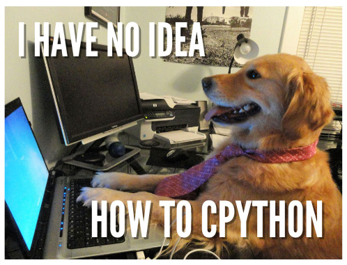
How to
contribute?
- Developer guide
devguide.python.org/ - Bug Triaging
devguide.python.org/contrib/triage/ - Documentation
python.github.io/editorial-board/ - Infrastructure
pypa.io/en/latest/members/ - Approach involved people
The Current
State of Python
GitHub Universe 2024 (1/2)
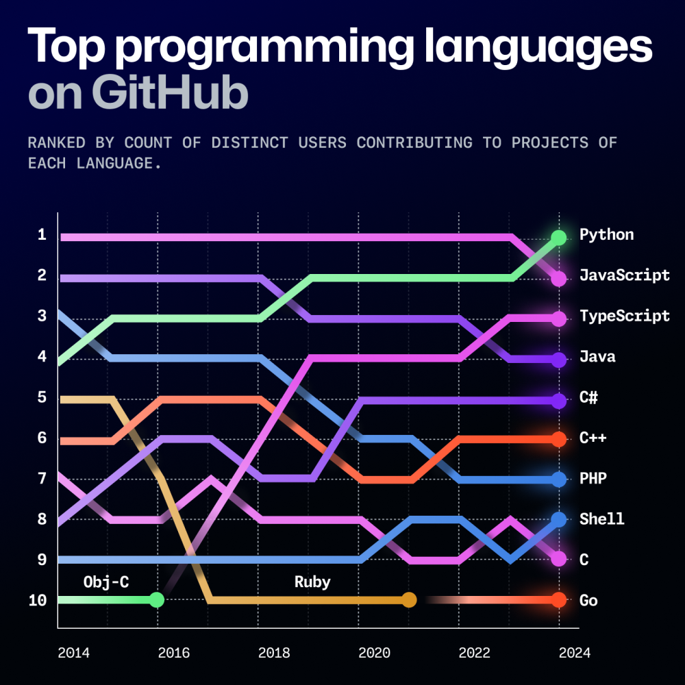
GitHub Universe 2024 (2/2)
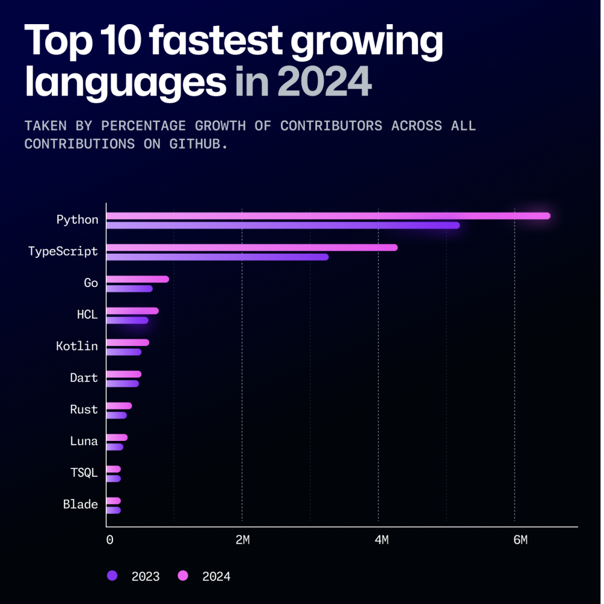
JetBrains Survey 2023
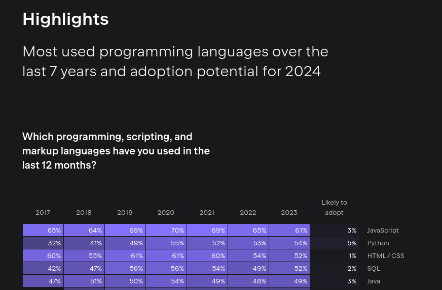
StackOverflow Survey 2024 (1/3)
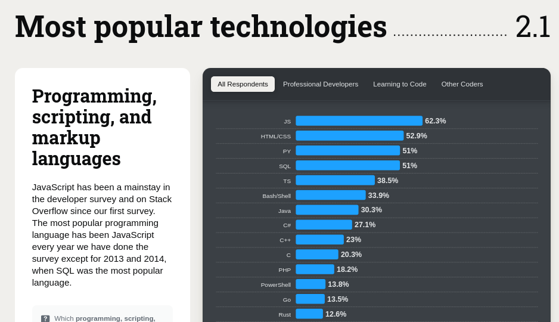
survey.stackoverflow.co/2024/technology#most-popular-technologies
StackOverflow Survey 2024 (2/3)
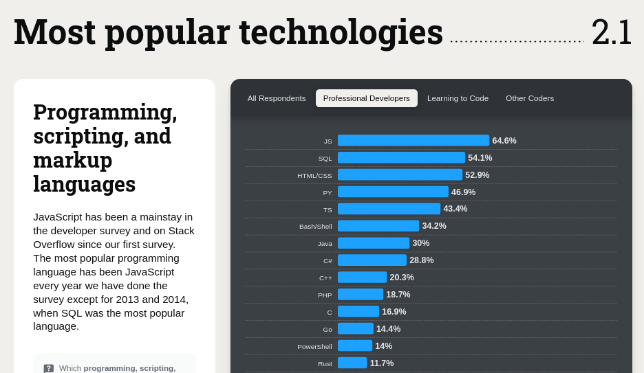
survey.stackoverflow.co/2024/technology#most-popular-technologies-language-prof
StackOverflow Survey 2024 (3/3)

Tiobe Index November 2024
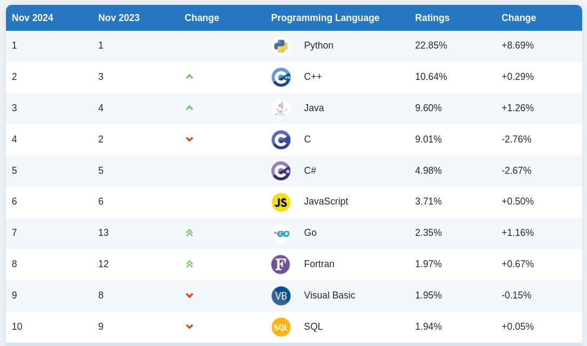
Python is used
everywhere
PSF Meetup Pro Network
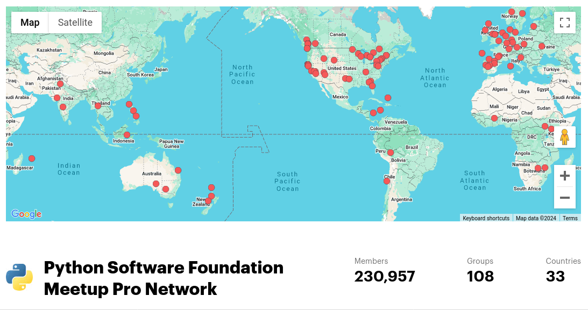
There are many other communities in other platforms
Python Conferences
PyCons in the world
According to pycon.org
🇳🇿🇦🇷🇦🇺🇧🇾 🇧🇴🇨🇲🇨🇦🇨🇱🇨🇳🇨🇴🇨🇿🇫🇷🇩🇪🇬🇭🇭🇰🇮🇳 🇮🇩🇮🇷🇮🇪🇮🇱🇮🇹🇯🇵🇰🇪🇱🇹🇲🇾🇳🇦🇳🇪🇳🇬 🇵🇰🇵🇭🇵🇱🇵🇹🇷🇺🇸🇬🇸🇰🇸🇮🇸🇴🇿🇦🇰🇷🇪🇸 🇸🇪🇹🇼🇹🇿🇹🇭🇳🇱🇹🇷🇺🇬🇺🇦🇬🇧🇺🇸🇺🇾🇻🇪
Meta Python Conferences
PyLadies
Python Software
Foundation (PSF)
The mission of the Python Software Foundation is to promote, protect, and advance the Python programming language, and to support and facilitate the growth of a diverse and international community of Python programmers.US 501(c)(3) non-profit organization.
PSF Structure
- Executive director
(Deb Nicholson) - Board of directors (12 people)
- Steering Council (5 people)
- PSF Employed Staff (12 people)
PSF Activities
- Infrastructure 🤖 (python.org, PyPI, Docs, other services)
- Intellectual property ⚖️ (trademarks and licenses)
- Community support 🫶 (PyCon US and many more)
PSA: Montly Office hours (Board and Grants) - more info here.
The PSF Board
Governing body that oversees the foundation's mission, finances, stragic direction and governance.The PSF Working groups
Interested? python.org/psf/workgroups/
PSF Membership
| Type | Price | Voting Rights | Published |
|---|---|---|---|
| Basic | Free | ❌ | ❌ |
| Supporting | From 25 USD | ✅ | ❌ |
| Self certified contributing | Free | ✅ | ❌ |
| Fellow | Nominated | ✅ | ✅ |
Do you contribute at least
5 hours per month to Python (*)?
A crucial pillar:
Code of Conduct
Are those the only aspects
of the community?
We can extend the community,
by extending Python,
Having a base C implementation
is very convenient.
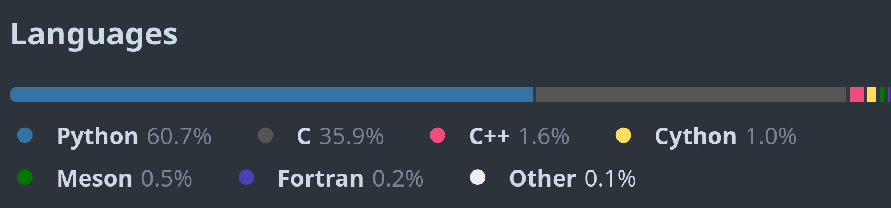
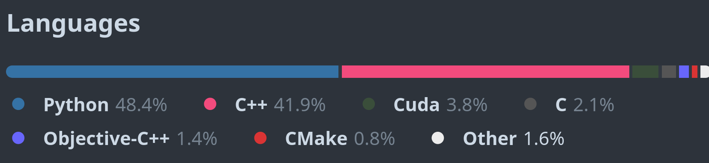
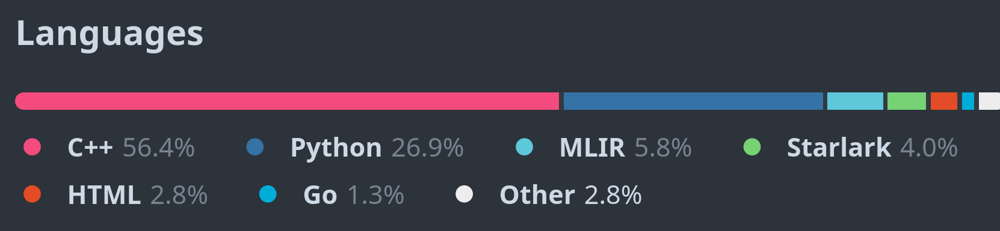
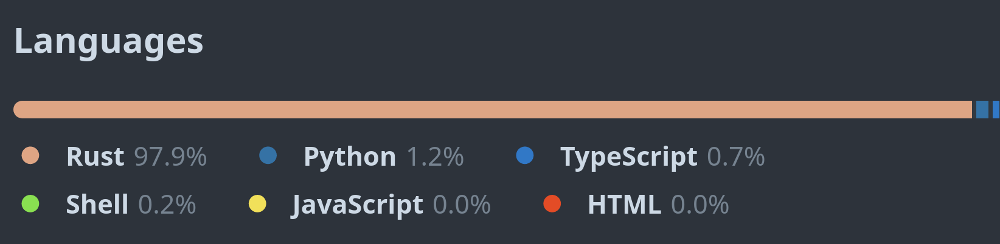
Qt /kjut/
Cross platform C++ framework, for UI and more.
Extending Python with C
#include <Python.h>
static char simple_docs[] = "hello(): prints hello :P\n";
static PyObject* simple_hello(PyObject* self, PyObject* args){
char *msg = "Hey PyConSE!!";
return Py_BuildValue("s", msg);
}
static PyMethodDef simple_funcs[] = {
{"hello", // ml_name
(PyCFunction)simple_hello, // ml_meth
METH_NOARGS, // ml_flags
simple_docs}, // ml_doc
{NULL, NULL, NULL, NULL}
};
static struct PyModuleDef simplemodule = {
PyModuleDef_HEAD_INIT, // m_base
"simple", // m_name
NULL, // m_doc
-1, // m_size
simple_funcs // m_methods
};
PyMODINIT_FUNC PyInit_simple(void){
return PyModule_Create(&simplemodule);
}
# setup.py
# sorry pyproject.toml
from setuptools import setup, Extension
setup(
name='simple',
version='1.0',
ext_modules=[Extension('simple',
['simple.c'])]
)
# Create wheel
$ python -m build -w
Generators saving the day
pybind11 (C++)
#include <pybind11/pybind11.h>
int add(int i, int j) {
return i + j;
}
PYBIND11_MODULE(example, m) {
// optional module docstring
m.doc() = "pybind11 example plugin";
m.def("add", &add,
"A function that adds two numbers");
}
$ c++ -O3 -Wall -shared -std=c++11 \
-fPIC $(python3 -m pybind11 --includes) example.cpp \
-o example$(python3-config --extension-suffix)
Shiboken (C++)
// test.cpp
#include <test.hpp>
int add(int i, int j) {
return i + j;
}
// test.hpp
int add(int i, int j);
<!-- bindings.xml -->
<?xml version="1.0"?>
<typesystem package="simple">
<function signature="add(int, int)"/>
</typesystem>
$ cmake -S . -B build
$ cmake --build build
$ cmake --install build
Rust
- Bringing a whole new community
- Safer code. Faster code
- Be mindful about comparisons

PyO3 (Rust)
use pyo3::prelude::*;
/// The sum of two numbers.
#[pyfunction]
fn add(a: i32, b: i32) -> PyResult {
Ok(a + b)
}
/// A Python module implemented in Rust.
#[pymodule]
fn simple_rust(_py: Python, m: &PyModule) -> PyResult<()> {
m.add_function(wrap_pyfunction!(add, m)?)?;
Ok(())
}
$ maturin develop
Don't forget
other languages
Ziggy PyDust (Zig)
const py = @import("pydust");
pub fn add(args: struct { a: i32, b: i32 }) i32 {
return args.a + args.b;
}
comptime {
py.rootmodule(@This());
}
$ poetry install
Supporting the ecosystem
(technical or non-technical)
Glue activities
- Helping the local community/conference.
- Helping others to reach their level.
- Pushing for the change they want to see
- Favor actions over opinions.
Why the glue is
different from community?
Glue problems
Python needs..
People with
different backgrounds.
People with
new ideas.
People with
motivation to do things.
That people can
probably be you.
Hopefully you can join
the glue supporting our ecosystem
Beyond "Hello, World!": from the core to you!
Dr. Cristián Maureira-Fredes
@cmaureir
maureira.xyz/pyconse2024